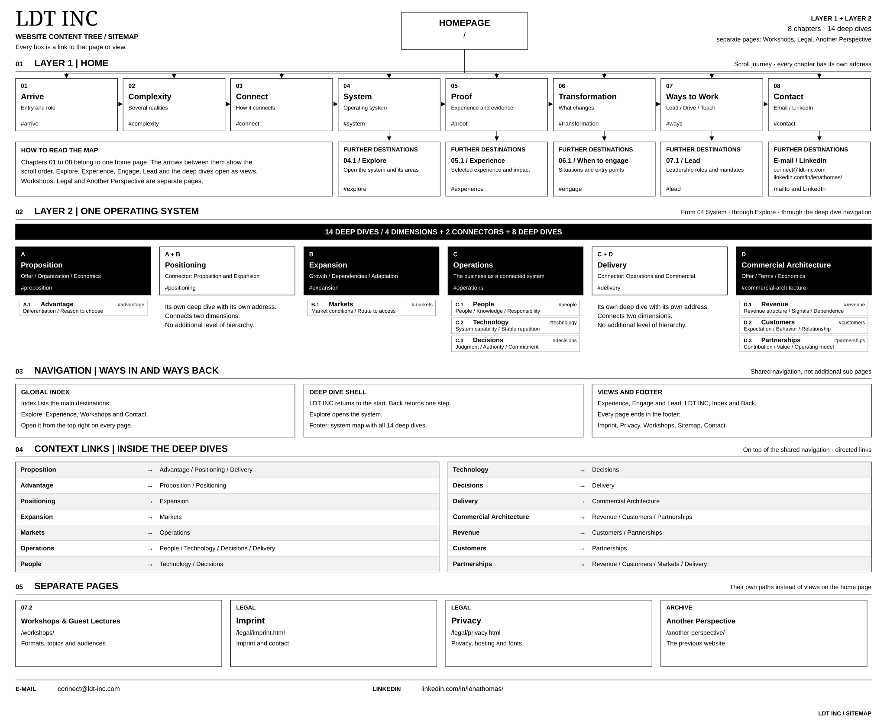

Table of contents
Sitemap
Every page and view of LDT INC, in the order of the journey.

View the whole sitemap- #arrive01.ArriveEntry and role
- #complexity02.ComplexitySeveral realities
- #connect03.ConnectHow it connects
- #system04.SystemThe operating system
- #proof05.ProofExperience and evidence
- #transformation06.TransformationWhat changes
- #ways07.Ways to WorkLead, Drive, Teach
- #contact08.ContactE-mail and LinkedIn
Operating System
Layer 2 · 14 deep dives · 4 dimensions, 2 connectors, 8 deep dives
- #explore04.1ExploreOpen the system and all its areas
- #propositionAPropositionOffer, organization, economics
- #advantageA.1AdvantageDifferentiation and reason to choose
- #positioningA + BPositioningConnects Proposition and Expansion
- #expansionBExpansionGrowth, dependencies, adaptation
- #marketsB.1MarketsMarket conditions and route to access
- #operationsCOperationsThe business as a connected system
- #peopleC.1PeoplePeople, knowledge, responsibility
- #technologyC.2TechnologySystem capability and stable repetition
- #decisionsC.3DecisionsJudgment, authority, commitment
- #deliveryC + DDeliveryConnects Operations and Commercial
- #commercial-architectureDCommercial ArchitectureOffer, terms, economics
- #revenueD.1RevenueRevenue structure, signals, dependence
- #customersD.2CustomersExpectation, behavior, relationship
- #partnershipsD.3PartnershipsContribution, value, operating model